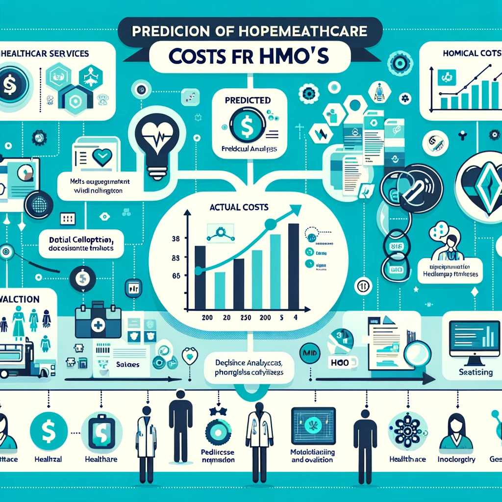

Engineered a MongoDB-driven architecture for real-time lacrosse game analytics between Syracuse and Colgate, incorporating NoSQL foundations, object storage, and Apache Drill for enhanced data querying and analysis. This project showcased my proficiency in modern database technologies and big data management, delivering a dynamic, scalable solution for sports analytics and fan engagement.

From November to December 2023, I spearheaded the enhancement of the PUBS Data Warehouse, architecting and refining an advanced data pipeline that seamlessly integrated with Snowflake and dbt Cloud for optimized ELT processes. This project embodied the principles of the Kimball Data Warehouse architecture, employing a star-schema for robust analytics through ROLAP and facilitating the creation of insightful datamarts. My contributions extended to developing interactive Power BI dashboards, drawing from the rich PUBS dataset to unearth deep insights into user engagement metrics. The implementation of a scalable analytics pipeline, stretching from Azure to Snowflake and processed through dbt Cloud, underscored my adeptness in constructing and managing complex data workflows, significantly boosting analytics insights and data warehousing efficiency.


The "Breast Cancer Posts and Comments Analysis" project delves into the dynamics of breast cancer discussions on platforms like Reddit to uncover prevalent concerns, misconceptions, and the emotional context impacting individuals. This analysis informs the development of a chatbot, a strategic tool designed to navigate these insights and offer targeted support. By providing accurate answers and personalized guidance, the chatbot acts as a bridge between healthcare professionals' expertise and the patient community's needs, enhancing care and support through effective communication.
The "Machine Learning for Drug Discovery in Dopamine Receptors" project leverages advanced data preprocessing and machine learning models to analyze and predict the bioactivity of chemical compounds targeting dopamine receptors. Utilizing techniques like removing correlated features, handling PAINS molecules, and employing various prediction models (e.g., Decision Trees, Naive Bayes, KNN, SVM, Random Forest, and XGBoost), the study optimizes drug discovery processes. Notably, the project incorporates neural networks, including ANN, CNN, and RNN, to refine predictions of chemical structures and bioactivity classes, demonstrating the potential of machine learning in enhancing the efficiency and efficacy of pharmaceutical research.

The "NYC Taxi Analysis" project at Syracuse University explores the dynamics of Green Taxis in New York City, especially focusing on outer boroughs and northern parts of Manhattan. Initiated to complement the iconic yellow taxis and cater to less-served areas since 2013, this analysis delves into taxi trip records during January and August 2022, months notable for tourist and student arrivals. By analyzing ride-sharing trends, payment methods, and travel distances, the project aims to unearth insights into passenger behaviors and preferences. Through meticulous data cleaning, dataset merging, and exploratory analysis, it seeks to offer valuable recommendations for taxi drivers on optimal service times and locations, as well as strategic insights for the Taxi and Limousine Commission (TLC) to enhance green taxi services and revenue.

In the "Prediction of Healthcare Costs for HMOs" project, a collaborative effort by a team of four, we integrated diverse data sources into a unified dataset for an HMO analysis. Utilizing R, we applied machine learning techniques such as Support Vector Machine (SVM), Association Rules, and Linear Regression to analyze healthcare costs. This analytical journey led to the development of an interactive dashboard using the Shiny app in R, which boasts a sensitivity of 95% and an accuracy of 89%. The dashboard not only identifies key variables influencing healthcare costs but also provides a detailed analysis of the most effective support vector model, offering a sophisticated tool for predicting healthcare costs in the HMO sector.